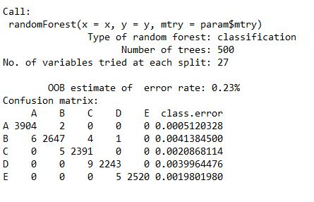

Title
My website for Project on Practical ML using R
By Ms. Rachana S. Oza
Project Definition
Using devices such as Jawbone Up, Nike FuelBand, and Fitbit it is now possible to collect a large amount of data about personal activity relatively inexpensively. These type of devices are part of the quantified self movement – a group of enthusiasts who take measurements about themselves regularly to improve their health, to find patterns in their behavior, or because they are tech geeks. One thing that people regularly do is quantify how much of a particular activity they do, but they rarely quantify how well they do it. In this project, your goal will be to use data from accelerometers on the belt, forearm, arm, and dumbell of 6 participants. They were asked to perform barbell lifts correctly and incorrectly in 5 different ways. More information is available from the website here: http://groupware.les.inf.puc-rio.br/har (see the section on the Weight Lifting Exercise Dataset).
- Given by Coursera Course Coordinator
Step 1 : Include R Packages
library(caret);
library(AppliedPredictiveModeling);
library(randomForest);
library(knitr);
library(rpart);
library(rpart.plot);
library(rattle);
library(corrplot)
Step 2 : Loading training and testing datasets
Train <- "http://d396qusza40orc.cloudfront.net/predmachlearn/pml-training.csv"
Test <- "http://d396qusza40orc.cloudfront.net/predmachlearn/pml-testing.csv"
training <- read.csv(url(Train))
testing <- read.csv(url(Test))
Step 3 : Create Data Partition
inTrain <- createDataPartition(training$classe, p=0.7, list=FALSE)
TrainSet <- training[inTrain, ]
TestSet <- training[-inTrain, ]
Step 4 : Preprocess the data to drop zero and NAN values
NonZV <- nearZeroVar(TrainSet)
TrainSet <- TrainSet[, -NonZV]
TestSet <- TestSet[, -NonZV]
NA_ALL <- sapply(TrainSet, function(x) mean(is.na(x))) > 0.95
TrainSet <- TrainSet[, NA_ALL==FALSE]
TestSet <- TestSet[, NA_ALL==FALSE]
Dropping the first five columns from the training and testing dataset>
TrainSet <- TrainSet[, -(1:5)]
TestSet <- TestSet[, -(1:5)]
Step 5 : Random Forest to train and predict model
set.seed(12345)
controlRF <- trainControl(method="cv", number=3, verboseIter=FALSE)
modRF <- train(classe ~ ., data=TrainSet, method="rf", + trControl=controlRF)
modRF$finalModel

predictRF <- predict(modFitRandForest, newdata=TestSet)
To print the confusion matrix we need to factor both the predicRF and TestSet for equal levels. So here I have called the as.factor function within the confusionMatrix () functions.
Statistics_RF <- confusionMatrix(predictRF, as.factor(TestSet$classe))
Statistics_RF

Step 6 : Decision Tree to train and predict model
set.seed(12345)
modDT <- rpart(classe ~ ., data=TrainSet, method="class")
fancyRpartPlot(modDT)

predictDecTree <- predict(modDT, newdata=TestSet, type="class")
To print the confusion matrix we need to factor both the predicDecTree and TestSet for equal levels. So here I have called the as.factor function within the confusionMatrix () functions.
Staestics_DT <- confusionMatrix(predictDecTree, as.factor(TestSet$classe))
Statistics_DT

Step 7 : GBM to train and predict model
set.seed(12345)
controlGBM <- trainControl(method = "repeatedcv", number = 5, repeats = 1)
modGBM <- train(classe ~ ., data=TrainSet, method = "gbm", + trControl = controlGBM, verbose = FALSE)
modGBM$finalModel

predictGBM <- predict(modGBM, newdata=TestSet)
To print the confusion matrix we need to factor both the predicGBM and TestSet for equal levels. So here I have called the as.factor function within the confusionMatrix () functions.
Statestics_GBM <- confusionMatrix(predictGBM, as.factor(TestSet$classe))
Statistics_GBM

Step 8 : Final Result
predictTEST <- predict(modRF, newdata=testing)
predictTEST

I. RandomForest (RF) : Accuracy : 0.9963
II. Decision Tree (DT) : Accuracy : 0.7368
III.Gradient Boosting Model (GBM) : 0.9871
Step 7 : Conclusion
Thus the best working model is Random Forest only.bold>